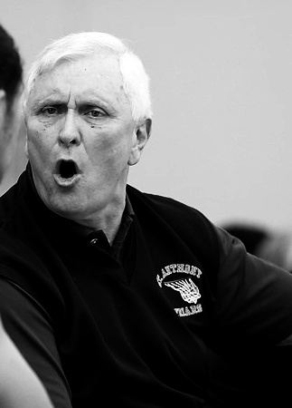
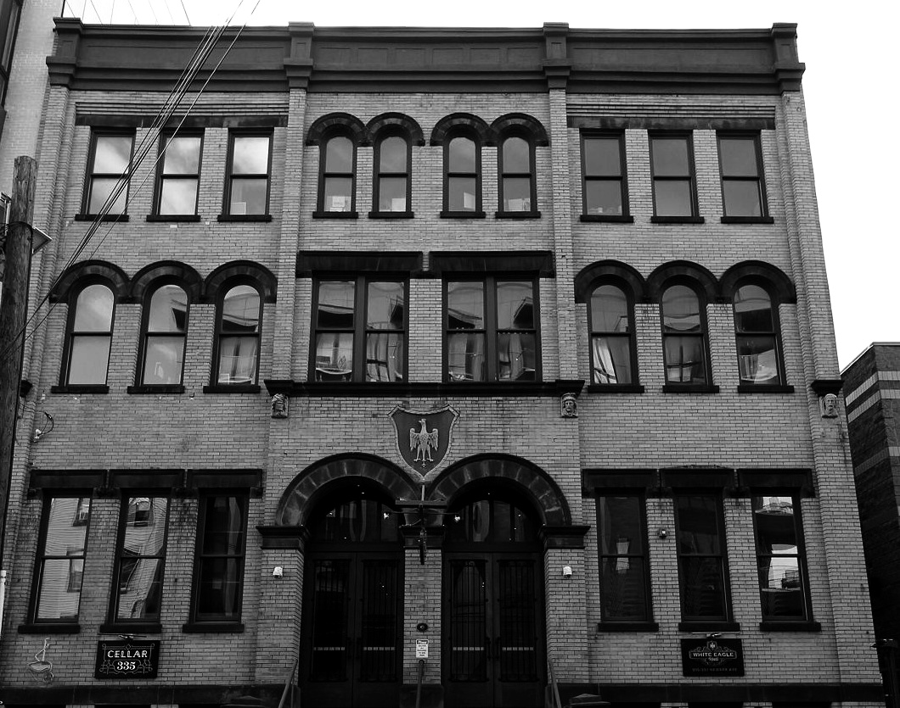
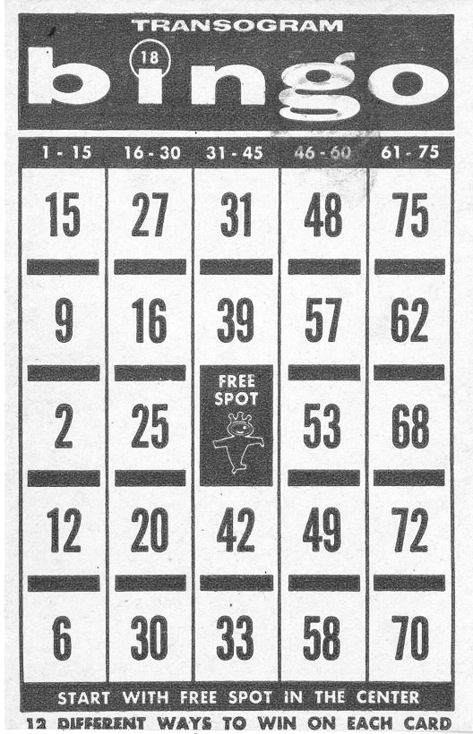
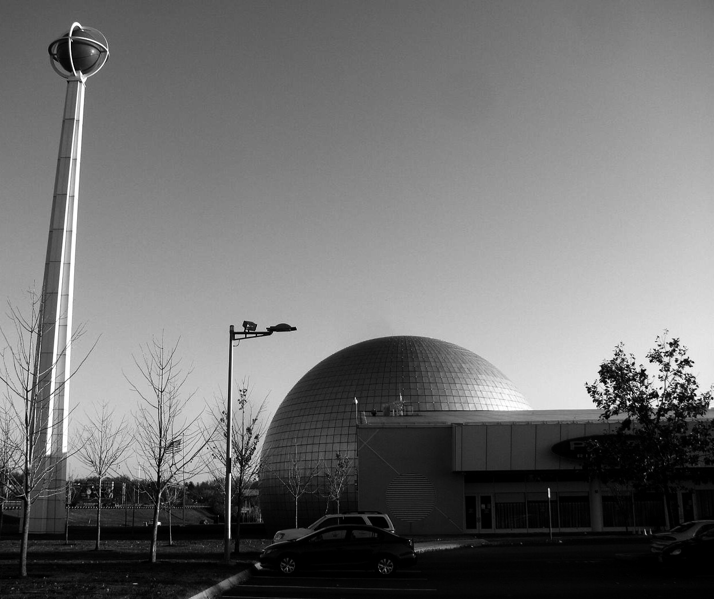

+20 TÍTULOS
JERSEY CITY · EE. UU.
EL INSTITUTO · FOTO DE 2014

BOB HURLEY · ST. ANTHONY
ENTRENADOR · 1972–2017BOB HURLEY
Fotos: Vault7424 y Jaylen123456789, 2014 · CC BY-SA 3.0

WHITE EAGLE HALL · HOY

CARTÓN DE BINGO
Fotos: Macaddct1984, 2023 (CC BY-SA 4.0) · Abbey Hendrickson (CC BY 2.0)
EXPEDIENTE · RECREACIÓN
AGENTE DE
LIBERTAD
CONDICIONAL
8 HORAS AL DÍA
SPORTS ILLUSTRATED, 1989
1972
BALONCESTO · SALÓN DE LA FAMA

SPRINGFIELD, MASSACHUSETTS · FOTO DE 2011
Foto: John Phelan, 2011 · CC BY 3.0
Fotos: Vault7424 y Jaylen123456789 (CC BY-SA 3.0), Macaddct1984 (CC BY-SA 4.0), John Phelan (CC BY 3.0) y Abbey Hendrickson (CC BY 2.0), modificadas, vía Wikimedia Commons. Trofeos, pistas, marcador y expediente: recreación.